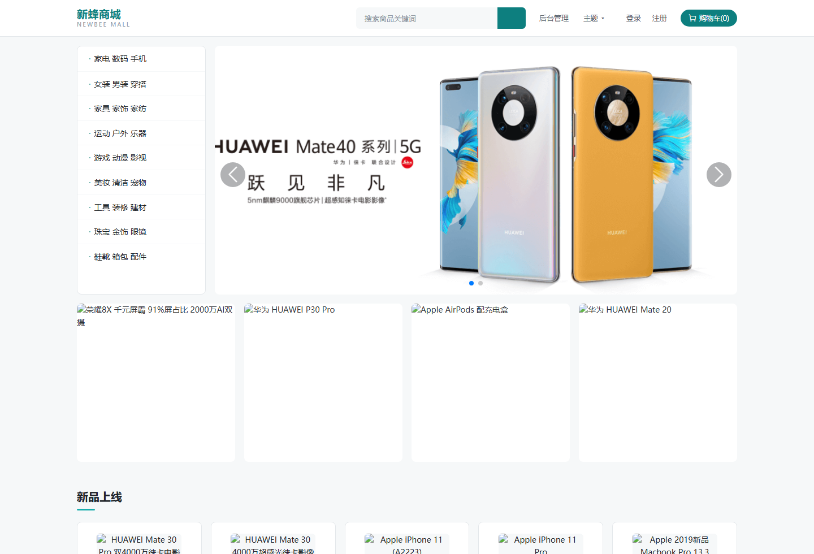
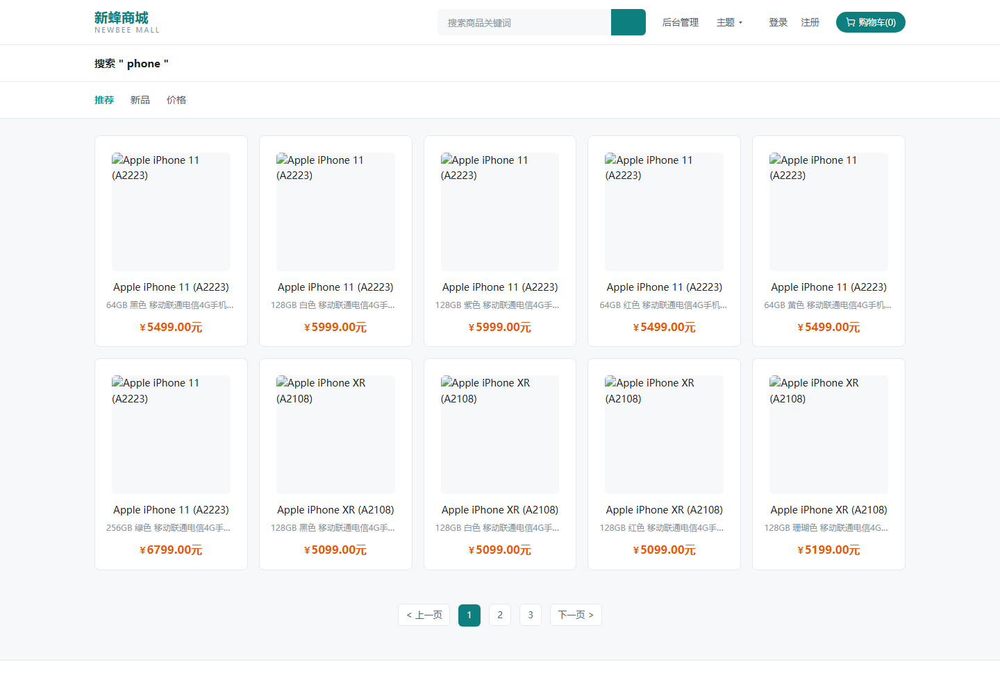
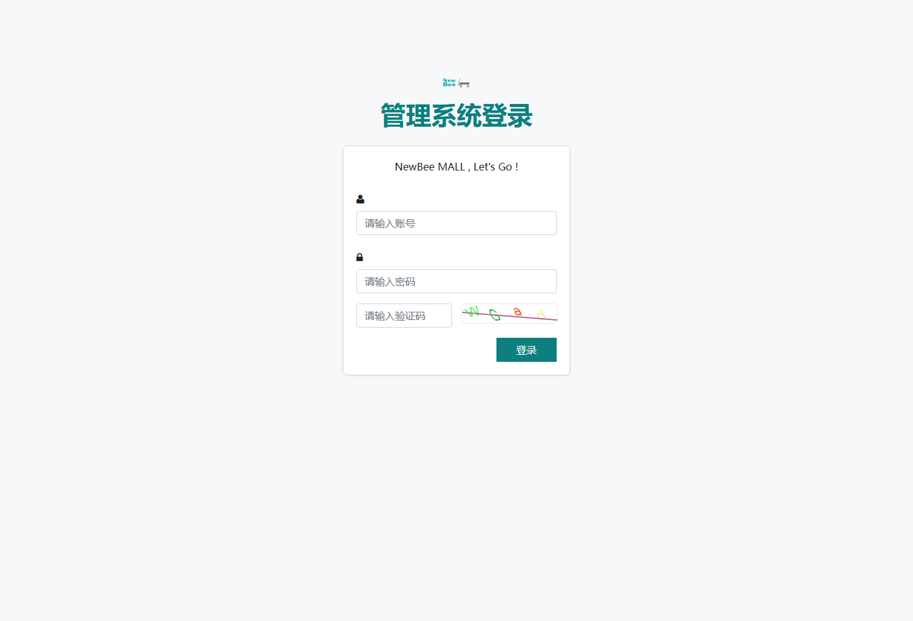

| 里程碑 | 内容 | 状态 |
|---|---|---|
| M1 | Spring Boot 2.7.5 → 3.5.16；Java 8 → 21；javax → jakarta 44 处；配置迁移 | ✅ 完成 |
| M2-1 | LangChain4j 1.20.0 引入 + ChatModel 装配 |
✅ 完成 |
| M2-2 | MallTools 6 个只读 @Tool + 2 条 Mapper SQL |
✅ 完成 |
| M2-3 | RAG：知识库构建（588 片段）+ 混合检索（关键词 + 向量 → RRF） | ✅ 完成 |
| M2-4 | 编排 CsAgentService + 质检 QaReviewer（audit/gate） |
🔄 进行中 |
| M2-5 | SSE 流式接口 + 会话记忆落库 | ⬜ 待做 |
| M3 | 前端原生融合（浮窗 + /cs）+ 容器化 + 压测 + CI |
容器化 ✅ / 前端待做 |
| 容器 | 状态 | 端口 |
|---|---|---|
| newbee-mall-app | Up (healthy) | 宿主 28090 → 容器 28089 |
| newbee-mall-mysql | Up (healthy) | 仅内网（不映射宿主，避免与本机 MySQL 冲突） |
| newbee-mall-redis | Up (healthy) | 宿主 16379 → 容器 6379（redis:8，Query Engine 可用） |
容器内数据来自 ops/init.sql（脱敏）：575 商品 / 92 分类 / 3 管理员 / 0 用户。



注：商品详情 / 购物车 / 个人中心属登录拦截路径，未登录访问会 302 跳转登录页（这是商城的正常行为，已在冒烟基线的「行为特征」里记录）。
| 工具 | 能力 |
|---|---|
searchGoods | 名称/简介模糊搜索（标注上下架） |
getGoodsDetail | 价格/库存/标签/分类/详情 |
checkStock | 库存 + 在售状态 |
queryOrder | 订单状态/金额/收货信息 |
searchByCategory | 按分类名查商品 |
recommendGoods | 推荐（在售优先 + 价格排序） |
查询「保湿」 [1] 无印良品 MUJI 保湿化妆液 (goodsId=10143, RRF=0.0312) [2] 无印良品 MUJI 基础润肤乳液 (goodsId=10146, RRF=0.0308) [3] 迪奥烈艳蓝金唇膏520# (goodsId=10243, RRF=0.0167) 查询「化妆水」 [1] 无印良品 MUJI 基础润肤化妆水 (10085) [2] 无印良品 MUJI 凝胶墨水圆珠笔 (10033) ← 英文模型对中文专名区分弱 [3] 无印良品 MUJI 基础润肤化妆水 (10080)
阶段 2 计划换中文嵌入（bge-small-zh）并产出对比报告 —— 见 docs/RAG-EVAL.md（待写）。
| 事项 | 结论 |
|---|---|
| 基准原则 | 凡冲突以商城源码为准：Python 教学版把上下架判断写反了（==1 判在售，实际 Constants.SELL_STATUS_UP=0 才在售） |
| 语料红线 | 写入向量库的 chunk 不含价格/库存/上下架（价格类一律以工具为准，RAG 只作语义参考） |
| Jedis 冲突 | community-redis 要 7.2.1，Boot BOM 强制降到 6.0.0 → pom 显式覆盖（DESIGN §6.4 预警的真实触发点） |
| 模型通道 | OmniRoute 的 /v1/models 同时返回 id 与 name；请求必须用 id（agnes/agnes-2.0-flash），用显示名会报 not available in live catalog |
| WSL 边界 | WSL 访问不到 Windows 的 localhost（需 Windows curl.exe）；环境变量不会自动跨界（需 WSLENV 转发） |
| 验证纪律 | 冒烟脚本做过阳性/阴性对照：故意用错 DB 密码启动 → 报「失败 2 + 退出码 1」；正常时 16/16 |
1. M2-4（进行中）→ claude 检查 → 提交
2. M2-5：SSE 流式接口 + 会话记忆落库
3. M3 前端融合：浮窗 + /cs 完整页 + 上下文面板（这才是"界面割裂"的最终解决）
4. M3 其余：虚拟线程压测（容器内）、中文嵌入对比报告、Testcontainers + CI
5. 全部完成后推 GitHub（远程仓库尚未创建）
文档索引：docs/DESIGN.md（设计规格）· docs/PLAN.md（M1 计划）·
docs/UPGRADE-BOOT3.md（升级实战）· docs/STATUS.md（状态快照）